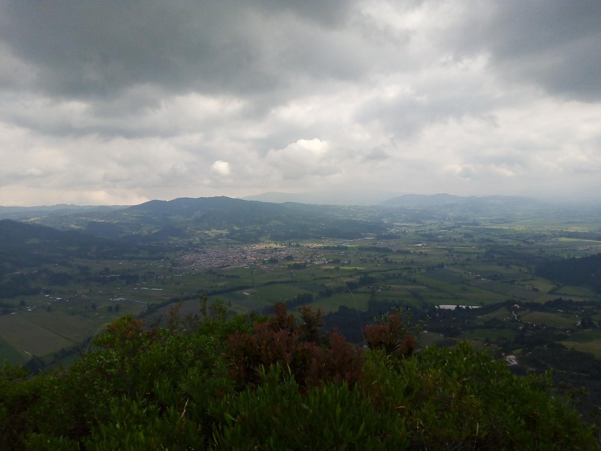
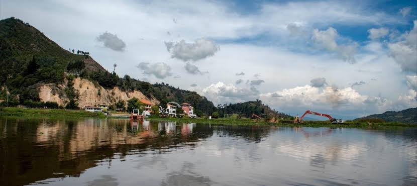

Camino Real Ancestral
Ruta empedrada histórica que conecta el casco urbano con las veredas altas, ideal para caminatas de dificultad media.
Recorre los caminos veredales, fuentes hídricas y zonas naturales preservadas en las montañas de Simijaca.

Ruta empedrada histórica que conecta el casco urbano con las veredas altas, ideal para caminatas de dificultad media.

Trayecto plano perimetral bordeando los humedales del municipio, idóneo para avistamiento de aves acuáticas y flora nativa.

Recorrido por zonas de reserva nativa con vegetación de roble y encenillo, promoviendo el turismo de conservación.